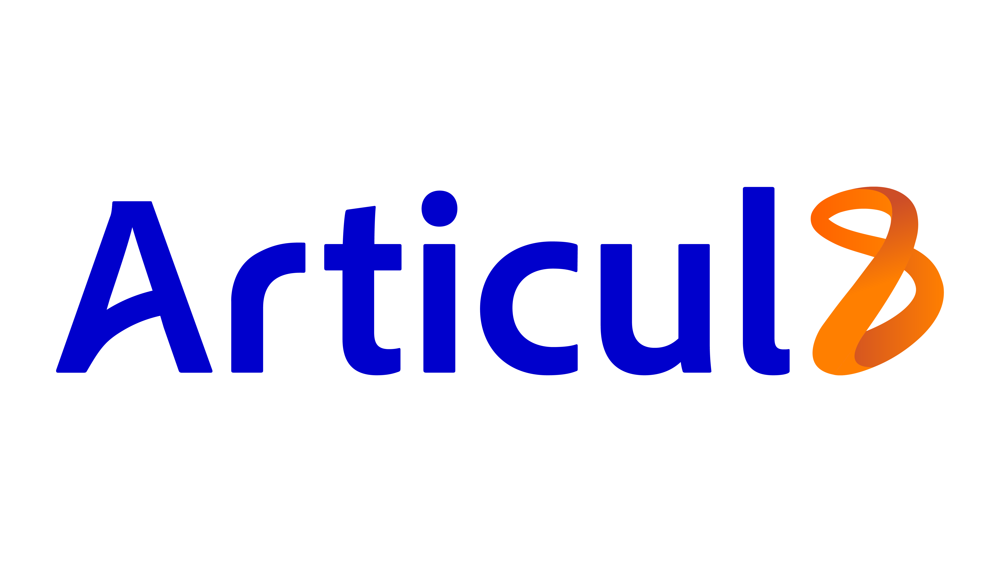
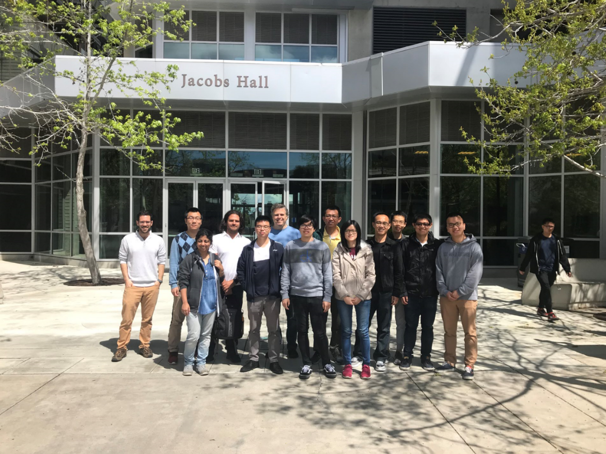
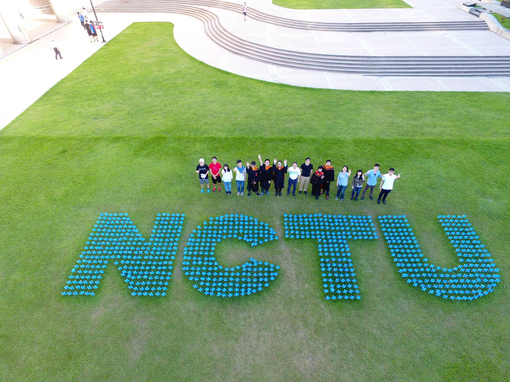
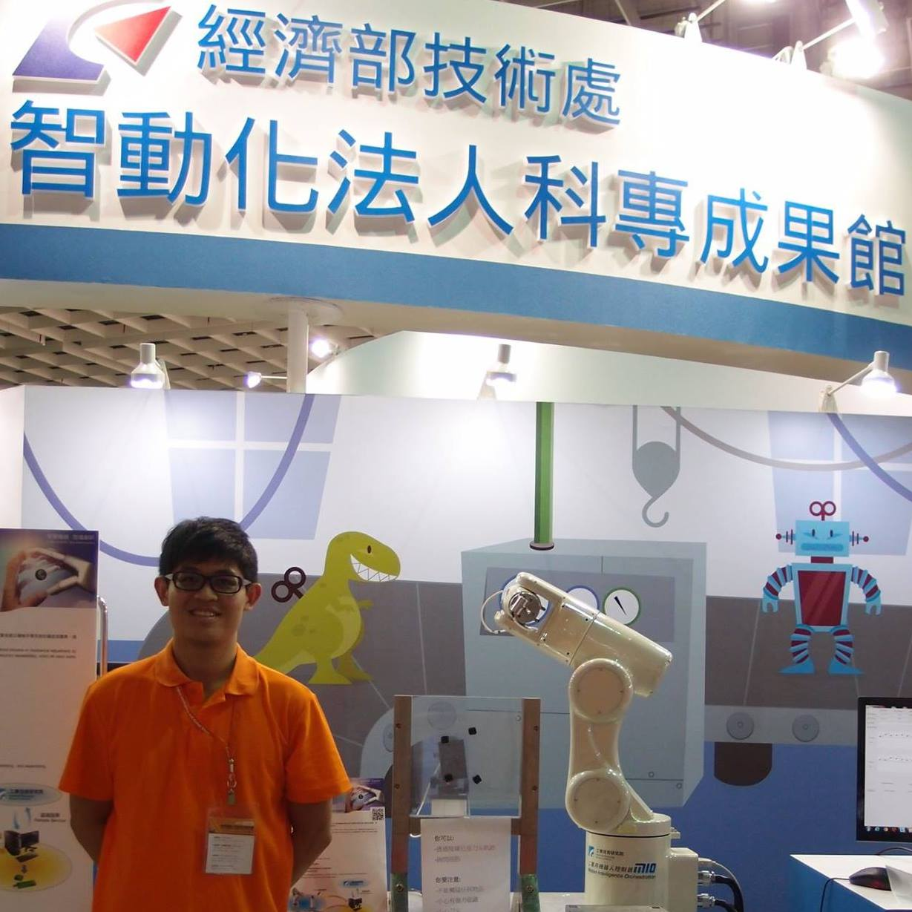

Professional Experience

Articul8.ai
Senior Applied AI Researcher
Jan 2025 - Present
Applied AI Researcher
Apr 2024 - Dec 2024
- Developed multilingual and multimodal GenAI models for image understanding, visual question answering, and image-text alignment and retrieval.
- Collaborated with the engineering team to deliver task-specific large language models, including table analysis and harmful content detection.
- Designed domain-specific GenAI models, including data curation, large-scale model training, and benchmark evaluation.
Statistical Visual Computing Lab (SVCL), UC San Diego
Graduate Student Researcher
Jun 2018 - Mar 2024
- Published 15 papers during PhD studies on visual language models, self-supervised learning, anomaly detection, and model robustness.
- Worked on large-scale 3D reconstruction of real objects [Project].

Mitsubishi Electric Research Laboratories (MERL)
Research Intern
Jun 2023 - Sep 2023
- Conducted research on industrial anomaly detection.
- Published one paper in CVPR 2024.
Amazon AWS AI
Applied Scientist Intern
Jun 2021 - Sep 2021
- Developed a visual grounding transformer model with 1.3× smaller size and 3× faster speed.
- Published work in the ECCV 2022 Workshop on the International Challenge on Compositional and Multimodal Perception. [Blog]
Computer Vision Research Center at National Chiao Tung University
Research Assistant
Sep 2016 - Jun 2017
- Worked on rupee bill serial number detection and recognition.
- Developed deep learning-based human activity analysis for aerial images.
- Worked on principal point estimation algorithms.
- Built automated optical inspection methods for bobbin defects.

Industrial Technology Research Institute (ITRI)
Software Engineer Intern
Jan 2015 - Dec 2015
- Calibrated robotic arm DH parameters using an industrial camera.
- Designed a C# user interface to control the robotic arm and complete calibration.
- Represented ITRI at the 2015 Taiwan Automation Intelligence and Robot Show.
